การใช้งานไอซีตัวต้านทานปรับค่าได้แบบดิจิทัลสำหรับ FPGA#
Keywords: Digital Logic Design, VHDL, Intel / Altera FPGA, Quartus Prime, 8-bit Digital Potentiometer, MCP41010, SPI Bus
ความรู้และทักษะพื้นฐานที่เกี่ยวข้อง
- อิเล็กทรอนิกส์ (Electronics): การสร้างวงจรแบ่งแรงดัน (Voltage Divider) ด้วยไอซีตัวต้านทานปรับค่าได้ (Trimpot) การแปลงสัญญาณดิจิทัลเป็นแอนะล็อก (DAC) การสื่อสารด้วยบัส (SPI) การเชื่อมต่อ I/O รวมถึงการศึกษาเอกสาร Datasheet ของไอซี MCP41010
- การออกแบบวงจรลอจิก (Logic Design): การออกแบบวงจรดิจิทัล และการใช้งานชิป Cyclone IV FPGA
- การวัด (Measurement): การใช้ Signal Tap Logic Analyzer การตั้งค่า Trigger Conditions และการวัดสัญญาณด้วยออสซิลโลสโคป
- การเขียนโค้ดและการใช้ซอฟต์แวร์ (Software/Coding): การเขียนโค้ดด้วย VHDL และการใช้งาน Intel Quartus Prime (Lite Edition)
▷ การเชื่อมต่อกับไอซีประเภท Digital Potentiometer#
MCP41010 เป็นตัวอย่างของไอซีประเภทตัวต้านทานปรับค่าได้แบบดิจิทัล (Digital Potentiometer) และสามารถนำมาสร้างเป็นวงจรแบ่งแรงดัน (Voltage Divider) ที่ปรับเปลี่ยนระดับแรงดันไฟฟ้า และใช้เป็นสัญญาณเอาต์พุตแบบแอนะล็อกได้
ในการปรับค่าความต้านทานของไอซี MCP41010 จะต้องตั้งค่าไบต์คำสั่ง หรือ Command Byte
โดยให้มีค่าบิต C1C0 = "01" เพื่อเข้าสู่โหมดการเขียน และ
P1P0 = "01" เพื่อใช้กับตัวต้านทานวงจรแรก ดังนั้นจะได้ไบต์คำสั่งเป็น 0x11 (hex)
และถัดจากไบต์คำสั่ง จึงเป็นข้อมูลหนึ่งไบต์ (Data Byte) เพื่อกำหนดค่าความต้านทาน โดยเลือกได้ 256 ระดับ (0..255)
การส่งไบต์คำสั่งและไบต์ข้อมูลรวม 16 บิต จะต้องใช้วิธีเลื่อนบิตข้อมูลตามรูปแบบของบัส SPI
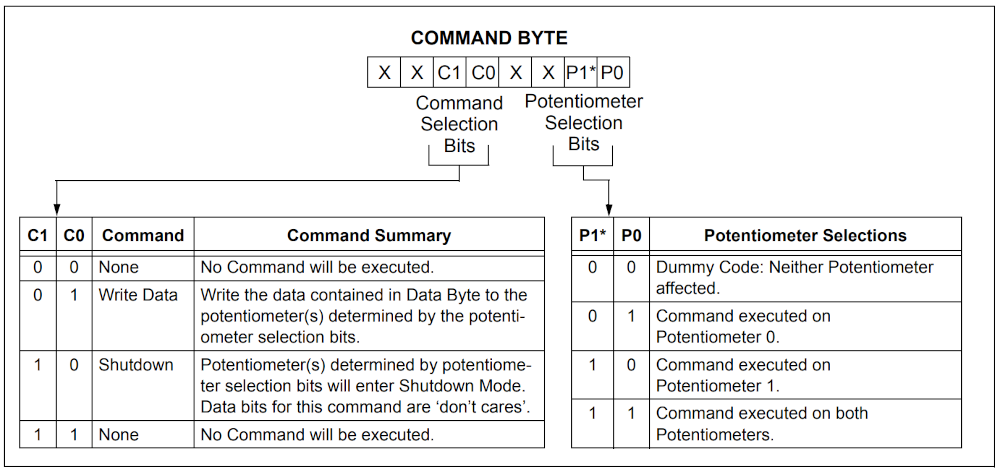
รูป: ไบต์คำสั่ง Command Byte สำหรับ MCP41010
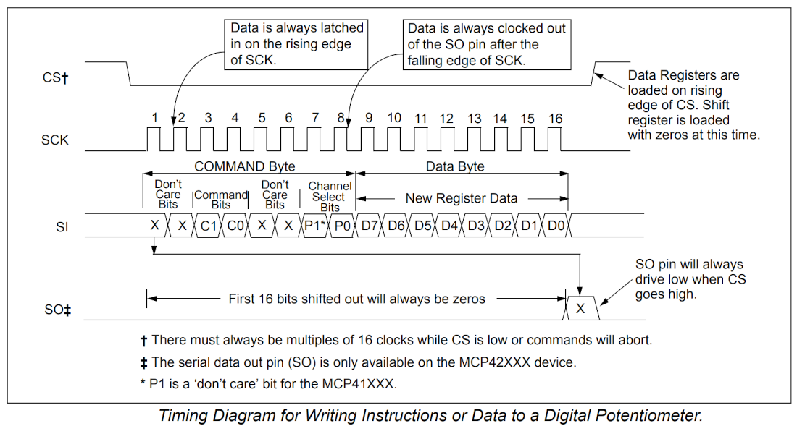
รูป: การส่งไบต์คำสั่งและไบต์ข้อมูล 16 บิต สำหรับบัส SPI
▷ ตัวอย่างโค้ด VHDL สำหรับทดลองใช้ไอซี MCP41010 ร่วมกับบอร์ด FPGA#
โค้ดตัวอย่างถัดไป ใช้สำหรับวงจรดิจิทัลที่มีชื่อว่า mcp41010 ทำหน้าที่รับข้อมูล 8 บิต
เข้ามาเป็นอินพุต DATA เมื่อสัญญาณอินพุต
START เป็นลอจิก 1 จะมีการเก็บค่าลงในรีจิสเตอร์ภายใน แล้วจึงมีการส่งข้อมูลออก
โดยการเลื่อนบิตทีละบิต ตามการทำงานของวงจร FSM (Finite State Machine)
มีขาสัญญาณเอาต์พุตสำหรับบัส SPI ได้แก่ CSN (Chip Select), SCLK (Serial Clock)
และ SDATA (Serial Data)
ในระหว่างการส่งข้อมูลบิต สัญญาณเอาต์พุต BUSY จะเป็น 1 แล้วเปลี่ยนเป็น 0 เมื่อจบการส่งข้อมูล
วงจรนี้ทำงานด้วยสัญญาณอินพุต Clock ความถี่ 50MHz (มีคาบเวลา 20ns)
และมีการกำหนดค่าคงที่ SPI_CLK_DIV ให้เท่ากับ 5 ในโค้ดตัวอย่าง สำหรับการทำงานของวงจรที่ทำหน้าที่เป็น
SPI Master เพื่อสื่อสารข้อมูลกับไอซี MCP41010 (เป็น SPI Slave)
ความถี่ของสัญญาณ SPI Clock (SCLK) จะได้เท่ากับ 50MHz / (2 * 5) หรือ 5MHz
library IEEE;
use IEEE.STD_LOGIC_1164.all;
use IEEE.NUMERIC_STD.all;
entity mcp41010 is
port (
CLK : in std_logic; -- 50 MHz system clock
NRST : in std_logic; -- Active-low asynchronous reset
-------------------------------------------
START : in std_logic;
DATA : in std_logic_vector(7 downto 0);
BUSY : buffer std_logic;
-------------------------------------------
CSN : out std_logic; -- Chip-Select
SCLK : out std_logic; -- Serial Clock
SDATA : out std_logic -- Serial Data
-------------------------------------------
);
end mcp41010;
architecture behavioral of mcp41010 is
constant SPI_CLK_DIV : integer := 5; -- 50MH/(2*5) => 5MHz SCLK freq.
constant DATA_WIDTH : integer := 16;
type state_type is (ST_IDLE, ST_START, ST_SCK_H, ST_SCK_L, ST_END);
signal state : state_type := ST_IDLE;
signal bit_cnt : integer range 0 to DATA_WIDTH := 0;
signal shift_en : std_logic := '0';
signal shift_reg : std_logic_vector(DATA_WIDTH-1 downto 0);
begin
process (CLK, NRST)
variable count : integer range 0 to (SPI_CLK_DIV-1) := 0;
begin
if NRST = '0' then
count := 0;
shift_en <= '0';
elsif rising_edge(CLK) then
if count = (SPI_CLK_DIV - 1) then
count := 0;
shift_en <= '1';
else
count := count + 1;
shift_en <= '0';
end if;
end if;
end process;
process (CLK, NRST)
begin
if NRST = '0' then
SCLK <= '0';
SDATA <= '0';
BUSY <= '0';
bit_cnt <= 0;
state <= ST_IDLE;
elsif rising_edge(CLK) then
case state is
when ST_IDLE =>
bit_cnt <= 0;
SCLK <= '0';
SDATA <= '0';
if START = '1' then
state <= ST_SCK_L;
shift_reg(15 downto 8) <= b"0001_0001";
shift_reg(7 downto 0) <= data;
BUSY <= '1';
end if;
when ST_SCK_L =>
if shift_en = '1' then
SCLK <= '0';
SDATA <= shift_reg(shift_reg'left);
if bit_cnt = DATA_WIDTH then
state <= ST_END;
else
state <= ST_SCK_H;
end if;
end if;
when ST_SCK_H =>
if shift_en = '1' then
SCLK <= '1';
shift_reg <= shift_reg(shift_reg'left-1 downto 0) & '0';
bit_cnt <= bit_cnt + 1;
state <= ST_SCK_L;
end if;
when ST_END =>
if shift_en = '1' then
SCLK <= '0';
BUSY <= '0';
state <= ST_IDLE;
end if;
when others =>
state <= ST_IDLE;
end case;
end if;
end process;
CSN <= not BUSY;
end behavioral;
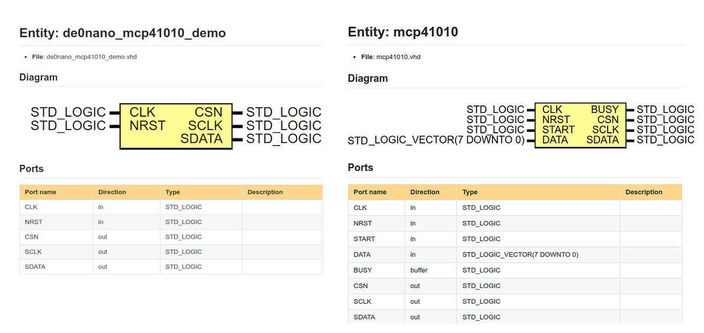
รูป: VHDL Entity mcp41010 และ de0nano_mcp41010_demo
วงจรถัดไป de0nano_mcp41010_demo ใช้สัญญาณอินพุต Clock
ที่มีความถี่ 50MHz และมีการใช้งาน mcp41010
เป็นส่วนประกอบหลักในการสร้างสัญญาณเอาต์พุตแบบแอนะล็อก
โดยมีสัญญาณควบคุม START เป็นลอจิก 1 พร้อมข้อมูล DATA ขนาด 8 บิต
เมื่อสัญญาณ BUSY มีค่าเป็น 0 วงจรจะเริ่มขั้นตอนการส่งข้อมูลออกด้วยบัส SPI
การส่งข้อมูล 8 บิตนี้ จะเกิดขึ้นทุก ๆ 500 ไซเคิล หรือ รอบของสัญญาณ Clock (50MHz) และส่งให้ไอซี MCP41010 นำไปสร้างสัญญาณเอาต์พุต โดยที่มีอัตราการอัปเดตข้อมูล 50MHz / 500 = 100kHz หรือ 100,000 Samples/sec
ข้อมูล 8 บิต ที่ถูกสร้างขึ้นมาและนำมาใช้ตามลำดับ เป็นไปตามรูปคลื่นสัญญาณแบบสามเหลี่ยม
(Triangular Wave) มีการนับขึ้น (Count up) จาก 0 ถึง 255 ทีละหนึ่ง
และตามด้วยการนับลง (Count Down) จาก 255 ถึง 0 ในหนึ่งคาบ
ดังนั้นคลื่นสามเหลี่ยมนี้ จะมีความถี่ 100kHz / 512 = 195.3Hz
library IEEE;
use IEEE.STD_LOGIC_1164.all;
use IEEE.NUMERIC_STD.all;
entity de0nano_mcp41010_demo is
port (
CLK : in std_logic; -- 50 MHz system clock
NRST : in std_logic; -- Active-low asynchronous reset
CSN : out std_logic;
SCLK : out std_logic;
SDATA : out std_logic
);
end de0nano_mcp41010_demo;
architecture synth of de0nano_mcp41010_demo is
component mcp41010
port (
CLK : in std_logic;
NRST : in std_logic;
START : in std_logic;
DATA : in std_logic_vector(7 downto 0);
BUSY : buffer std_logic;
CSN : out std_logic;
SCLK : out std_logic;
SDATA : out std_logic
);
end component;
type state_type is (ST_IDLE, ST_START);
signal state : state_type := ST_IDLE;
-- Signals to interface with mcp41010
signal start : std_logic := '0';
signal data : std_logic_vector(7 downto 0) := (others => '0');
signal busy : std_logic;
-- Internal signals for triangular wave generation
signal updown : std_logic := '1';
signal counter : integer range 0 to 255 := 0;
-- Internal constant and signal for tick counter
constant COUNT_MAX : integer := (500) - 1;
signal count : integer range 0 to COUNT_MAX;
signal tick : std_logic;
begin
-- Instantiate mcp41010 component
mcp41010_inst : mcp41010
port map
(
CLK => CLK,
NRST => NRST,
START => start,
DATA => data,
BUSY => busy,
CSN => csn,
SCLK => sclk,
SDATA => sdata
);
process (CLK, NRST)
begin
if NRST = '0' then
tick <= '0';
count <= 0;
elsif rising_edge(CLK) then
if count = COUNT_MAX then
count <= 0;
tick <= '1';
else
count <= count + 1;
tick <= '0';
end if;
end if;
end process;
-- Triangular wave generator process
process (CLK, NRST)
begin
if NRST = '0' then
counter <= 0;
updown <= '1';
start <= '0';
state <= ST_IDLE;
elsif rising_edge(CLK) then
case STATE is
when ST_IDLE =>
start <= '0';
if tick = '1' and busy = '0' then
-- Set data and trigger start signal
data <= std_logic_vector(TO_UNSIGNED(counter, 8));
start <= '1';
state <= ST_START;
end if;
when ST_START =>
if busy = '1' then
start <= '0';
-- Update counter for triangular waveform
if updown = '1' then
if counter = 255 then
updown <= '0'; -- count down
else
counter <= counter + 1;
end if;
else
if counter = 0 then
updown <= '1'; -- count up
else
counter <= counter - 1;
end if;
end if;
state <= ST_IDLE;
end if;
when others =>
state <= ST_IDLE;
end case;
end if;
end process;
end synth;
ไฟล์สำหรับการตั้งค่าการใช้งานขา FPGA I/O ของบอร์ด Terasic DE0-Nano มีดังนี้
# Pin & Location Assignments
# set_global_assignment -name FAMILY "Cyclone IV E"
# set_global_assignment -name DEVICE EP4CE22F17C6N
# GPIO_117 PIN_K16 CSN
# GPIO_119 PIN_L15 MISO
# GPIO_121 PIN_P16 MOSI
# GPIO_123 PIN_N16 SCLK
set_location_assignment PIN_J15 -to NRST
set_location_assignment PIN_R8 -to CLK
set_location_assignment PIN_K16 -to CSN
set_location_assignment PIN_P16 -to SDATA
set_location_assignment PIN_N16 -to SCLK
set_instance_assignment -name IO_STANDARD "3.3-V LVTTL" -to *
▷ การคอมไพล์โค้ดด้วย Quartus Prime Lite Edition#
ขั้นตอนถัดไป เป็นการใช้ซอฟต์แวร์ Intel Quartus Prime Lite Edition v22.1 แปลงโค้ด VHDL ให้เป็นวงจรดิจิทัล เพื่อนำไปใช้กับบอร์ด FPGA (Cyclone IV)
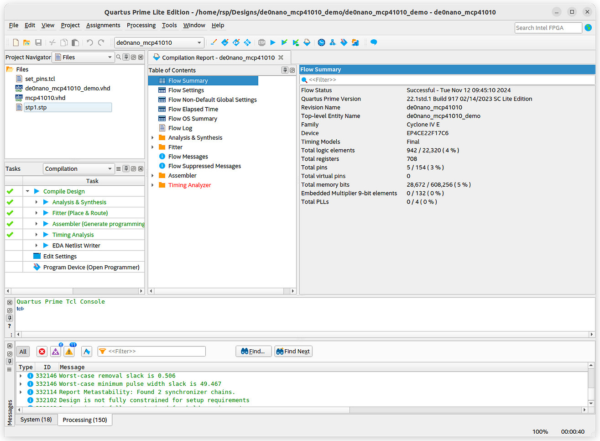
รูป: ซอฟต์แวร์ Intel Quartus Prime Lite Edition v22.1
เมื่อทำขั้นตอน Compilation ได้เสร็จสมบูรณ์แล้ว ก็ทดลองกับบอร์ด FPGA และวัดสัญญาณเอาต์พุตที่ได้จากไอซี MCP41010 โดยใช้ออสซิลโลสโคปแบบดิจิทัล จากรูปตัวอย่าง จะเห็นได้ว่า มีลักษณะเป็นสัญญาณคาบรูปสามเหลี่ยม และมีความถี่ 195Hz
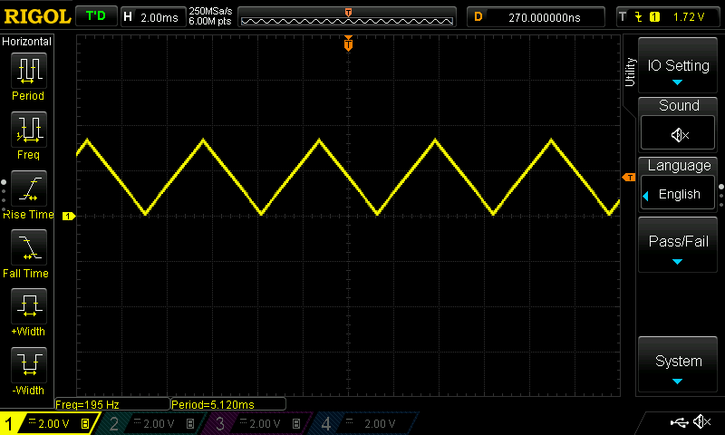
รูป: ตัวอย่างรูปคลื่นสัญญาณเอาต์พุต
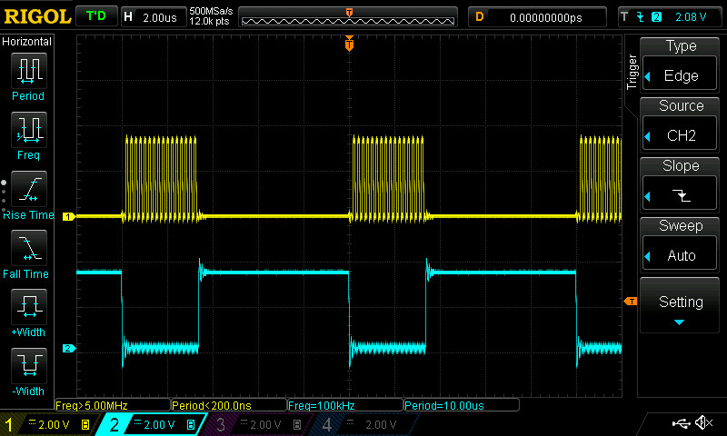
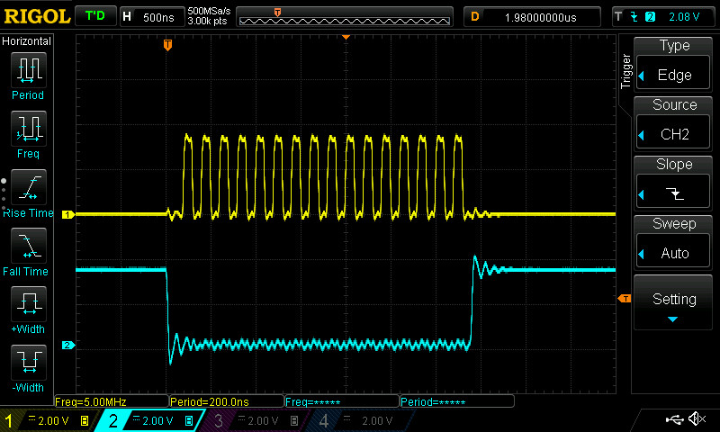
รูป: สัญญาณจากออสซิลโลสโคป CH1: SCLK และ CH2: CSN
จากรูปสัญญาณที่วัดได้ด้วยออสซิลโลสโคป จะเห็นได้ว่า ความถี่ของสัญญาณ SCLK เท่ากับ 5MHz และระยะห่างระหว่างขอบขาลงของสัญญาณ CSN วัดได้ 10us
ถัดไปเป็นตัวอย่างการใช้ Signal Tap Logic Analyzer สำหรับวงจรดิจิทัล มีการเลือกสัญญาณดิจิทัลของวงจรมาบางส่วนเพื่อบันทึกค่าลอจิก และมีการตั้งค่าเงื่อนไขสำหรับทริกเกอร์ เป็นขอบขาลง (Falling Edge) ของสัญญาณ CSN เมื่อเงื่อนไขของทริกเกอร์เป็นจริง ก็จะมีการบันทึกข้อมูลตามจังหวะของสัญญาณ 50MHz Clock
จากรูปจะเห็นได้ว่า ในช่วงเวลาที่สัญญาณ CSN มีค่าลอจิกเป็น Low มีความกว้างเท่ากับ 170 ไซเคิล หรือ คิดเป็น (170 * 20ns) = 3,400 ns หรือ คิดเป็น 3.4us
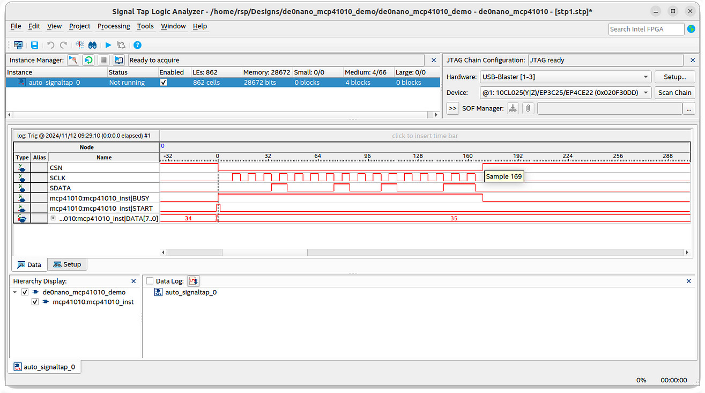
รูป: สัญญาณดิจิทัลที่ได้จากการทำงานของ Signal Tap Logic Analyzer
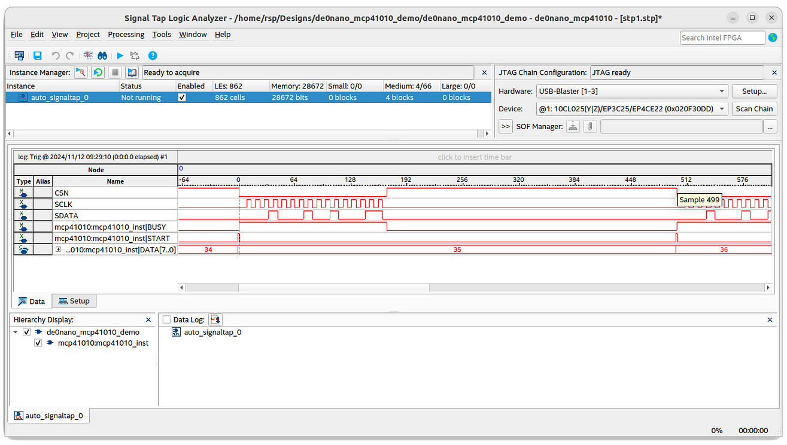
รูป: ระยะเวลาในการเกิดขอบขาลงของสัญญาณ CSN ถัดกันสองครั้ง เท่ากับ 500 ไซเคิล (คิดเป็นคาบเวลา 10us หรือ ความถี่ 100kHz)
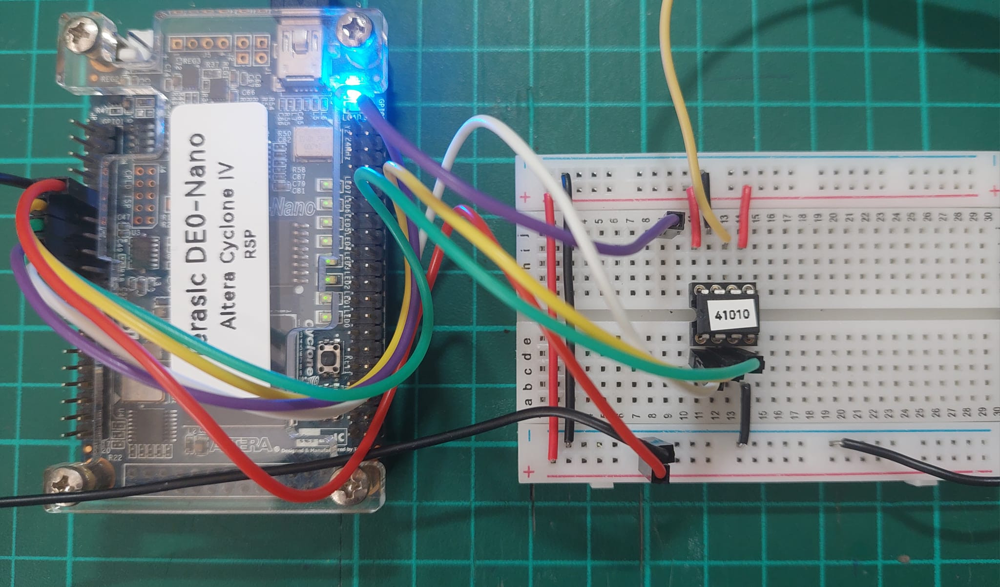
รูป: การต่อวงจรทดลองบนเบรดบอร์ดร่วมกับบอร์ด Terasic DE0-Nano FPGA
▷ ตัวอย่างโค้ด VHDL สำหรับการสร้างสัญญาณคาบรูปคลื่นไซน์#
ถัดไปเป็นตัวอย่างการสร้างสัญญาณคาบตามรูปคลื่นไซน์ โดยการสร้างตาราง หรืออาร์เรย์เก็บข้อมูล หรือค่าคงที่ ขนาด 8 บิต เป็นเลขจำนวนเต็มแบบ Unsigned มีจำนวน 256 ตัวเลข ตัวเลขเหล่านี้ได้จากการคำนวณค่าของฟังก์ชันไซน์ในหนึ่งคาบ และมีการบวกค่า DC Offset เพื่อให้แอมพลิจูดเป็นบวก (ไม่เป็นลบ) และมีค่าอยู่ในช่วง 0..255
library IEEE;
use IEEE.STD_LOGIC_1164.all;
use IEEE.NUMERIC_STD.all;
use IEEE.MATH_REAL.all;
entity de0nano_mcp41010_demo is
port (
CLK : in std_logic; -- 50 MHz system clock
NRST : in std_logic; -- Active-low asynchronous reset
CSN : out std_logic;
SCLK : out std_logic;
SDATA : out std_logic
);
end de0nano_mcp41010_demo;
architecture synth of de0nano_mcp41010_demo is
component mcp41010
port (
CLK : in std_logic;
NRST : in std_logic;
START : in std_logic;
DATA : in std_logic_vector(7 downto 0);
BUSY : buffer std_logic;
CSN : out std_logic;
SCLK : out std_logic;
SDATA : out std_logic
);
end component;
type state_type is (ST_IDLE, ST_START);
signal state : state_type := ST_IDLE;
constant BW : integer := 8; -- 8 bits for DAC output
constant M : integer := 8; -- log2(#samples)
constant MAX_INDEX : integer := 2**M - 1;
-- Signals to interface with mcp41010
signal start : std_logic := '0';
signal data : std_logic_vector(BW downto 0) := (others => '0');
signal busy : std_logic;
subtype sample_t is std_logic_vector((BW-1) downto 0);
type sample_table_t is array(0 to MAX_INDEX) of sample_t;
function init_table return sample_table_t is
variable LUT : sample_table_t;
variable x : REAL;
begin
for i in 0 to MAX_INDEX loop
-- sinusoidal waveform (with DC offset)
x := (1.0 + SIN(2.0*MATH_PI*real(i) / real(2**M)))/2.0;
LUT(i) := std_logic_vector(to_unsigned(integer(x*real(2**BW-1)),BW));
end loop;
return LUT;
end function;
-- Signal to index through LUT
signal lut_index : integer range 0 to (2**M - 1) := 0;
signal lut_table : sample_table_t := init_table;
constant COUNT_MAX : integer := (500) - 1;
signal count : integer range 0 to COUNT_MAX;
signal tick : std_logic;
begin
-- Instantiate mcp41010 component
mcp41010_inst : mcp41010
port map (
CLK => CLK,
NRST => NRST,
START => start,
DATA => data,
BUSY => busy,
CSN => CSN,
SCLK => SCLK,
SDATA => SDATA
);
-- Process for tick generation
process (CLK, NRST)
begin
if NRST = '0' then
tick <= '0';
count <= 0;
elsif rising_edge(CLK) then
if count = COUNT_MAX then
count <= 0;
tick <= '1';
else
count <= count + 1;
tick <= '0';
end if;
end if;
end process;
-- Sine wave generator process
process (CLK, NRST)
begin
if NRST = '0' then
lut_index <= 0;
start <= '0';
state <= ST_IDLE;
elsif rising_edge(CLK) then
case state is
when ST_IDLE =>
start <= '0';
if tick = '1' and busy = '0' then
-- Set data from LUT and trigger start signal
data <= lut_table(lut_index);
start <= '1';
state <= ST_START;
end if;
when ST_START =>
if busy = '1' then
start <= '0';
-- Increment LUT index for next sine value
if lut_index = MAX_INDEX then
lut_index <= 0; -- reset to beginning of LUT
else
lut_index <= lut_index + 1;
end if;
state <= ST_IDLE;
end if;
when others =>
state <= ST_IDLE;
end case;
end if;
end process;
end synth;
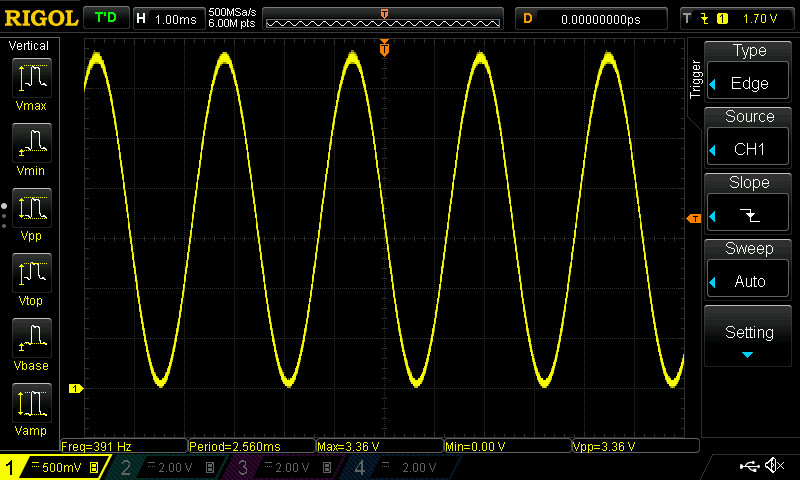
รูป: สัญญาณเอาต์พุต (สัญญาณคาบรูปคลื่นไซน์) ซึ่งวัดความถี่ได้ประมาณ 391Hz
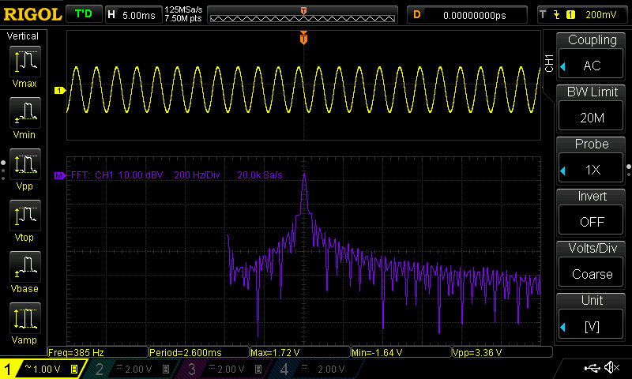
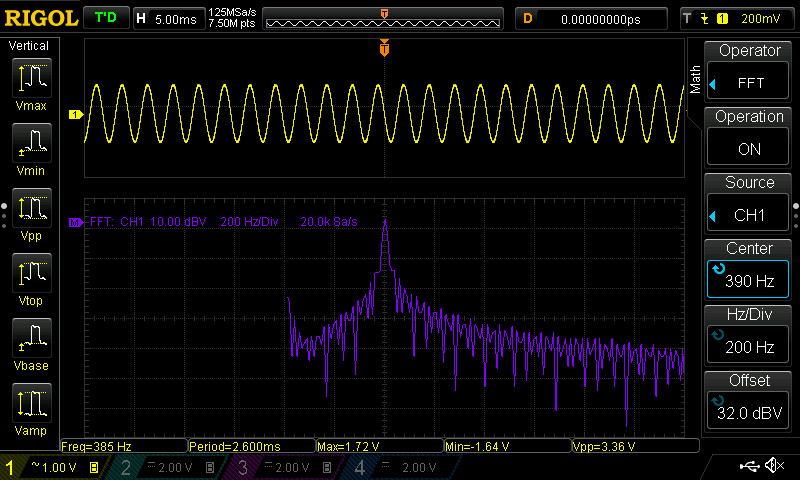
รูป: สเปกตรัมของคลื่นสัญญาณโดยใช้การประมวลผลด้วย FFT (Fast Fourier Transform) สำหรับสัญญาณเอาต์พุตในโหมด AC Coupling
▷ กล่าวสรุป#
บทความนี้ได้นำเสนอตัวอย่างการออกแบบวงจรดิจิทัลเพื่อใช้กับบอร์ด FPGA โดยได้เลือกใช้บอร์ด DE0-Nano (Cyclone IV FPGA) และมีการเขียนข้อมูล 8 บิต ไปยังไอซี MCP41040 Digital Potentiometer ด้วยอัตราคงที่ และได้สัญญาณเอาต์พุตเป็นสัญญาณแอนะล็อก
บทความที่เกี่ยวข้อง
- แนะนำการใช้งานซอฟต์แวร์ Signal Tap Logic Analyzer
- การใช้งานไอซีตัวต้านทานปรับค่าได้แบบดิจิทัล (Digital Potentiometer)
This work is licensed under a Creative Commons Attribution-ShareAlike 4.0 International License.
Created: 2024-11-13 | Last Updated: 2024-11-14